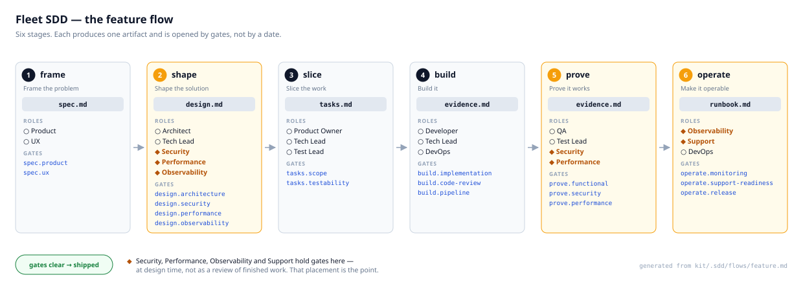
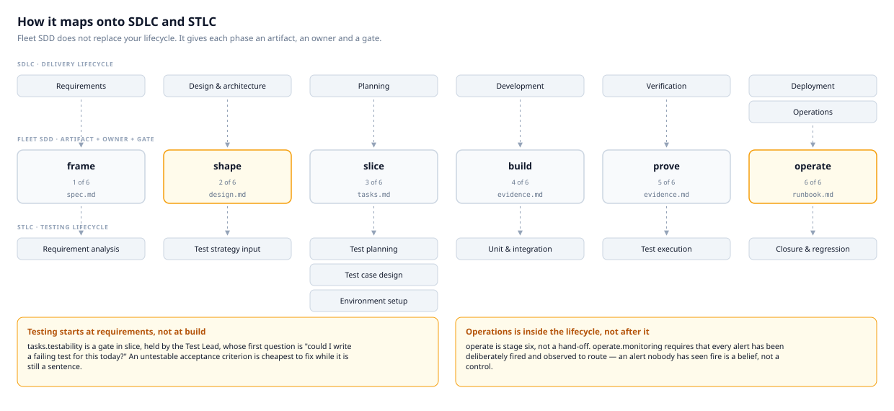
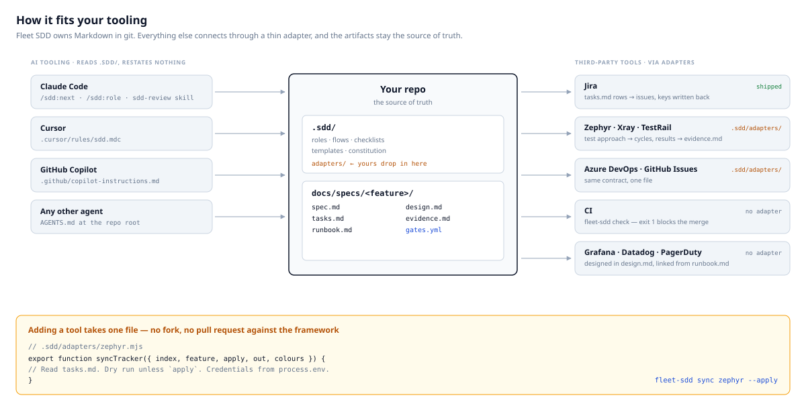
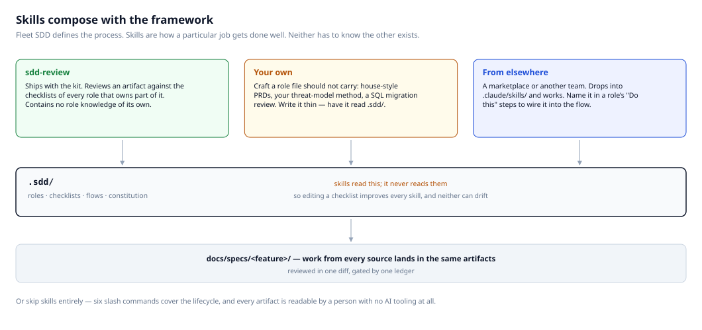

Fleet SDD — diagrams
Four views of the framework. Open this file in a browser, or view the
.svg files directly — they render anywhere, including VS Code,
GitHub and a PDF export.
The first is generated from kit/.sdd/flows/feature.md, so it
cannot drift from the flow it documents. Regenerate all four with
npm run diagrams.
1 · The feature flow
Six stages, each producing one artifact and opened by gates rather than by a date. Diamond-marked roles — Security, Performance, Observability and Support — hold gates at design time rather than reviewing finished work.
generated from kit/.sdd/flows/feature.md
2 · How it maps onto SDLC and STLC
Fleet SDD does not replace your lifecycle — it gives each phase an artifact, an owner and a gate. Note that testing enters at requirements, not at build, and that operations sits inside the lifecycle rather than after it.

3 · How it fits your tooling
Markdown in git is the source of truth. AI tools read
.sdd/ and restate nothing; trackers and test-management
systems connect through an adapter that is one file in your own repo.

4 · Skills compose with the framework
The framework defines the process; skills are how a particular job gets
done well. Skills read .sdd/ and it never reads them — so
editing a checklist improves every skill, and the two cannot drift apart.
